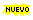

Aquí es donde anunciamos las novedades de nuestro sitio Web. Si nos ha visitado antes y desea saber qué ha cambiado, mire aquí primero.

NombreLargoOrganizacion Establece su presencia en Internet
Estos son los comunicados de prensa que emitimos durante el año pasado. Si quiere, puede buscar temas mediante palabras clave.